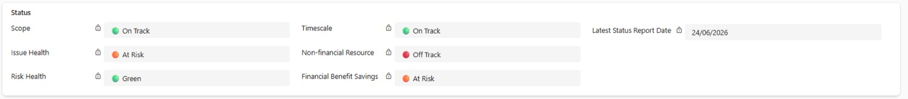
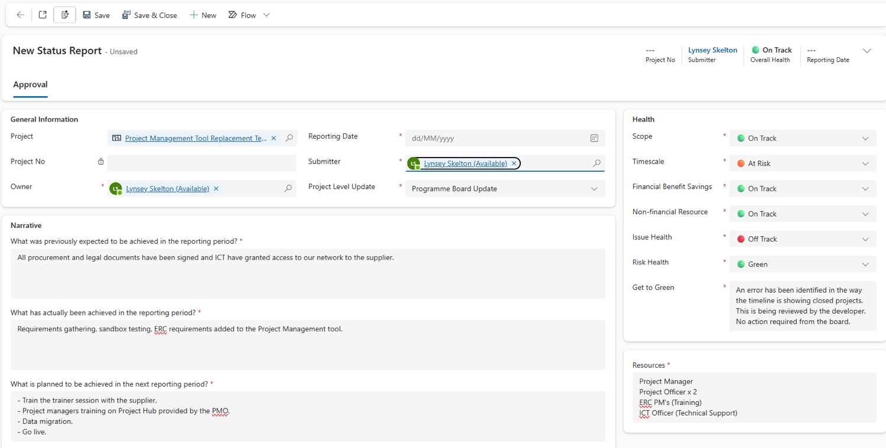
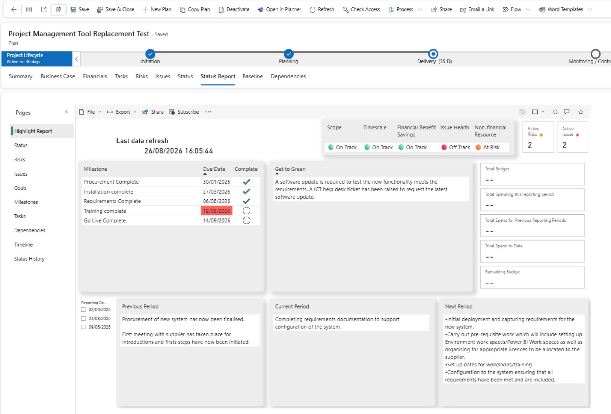
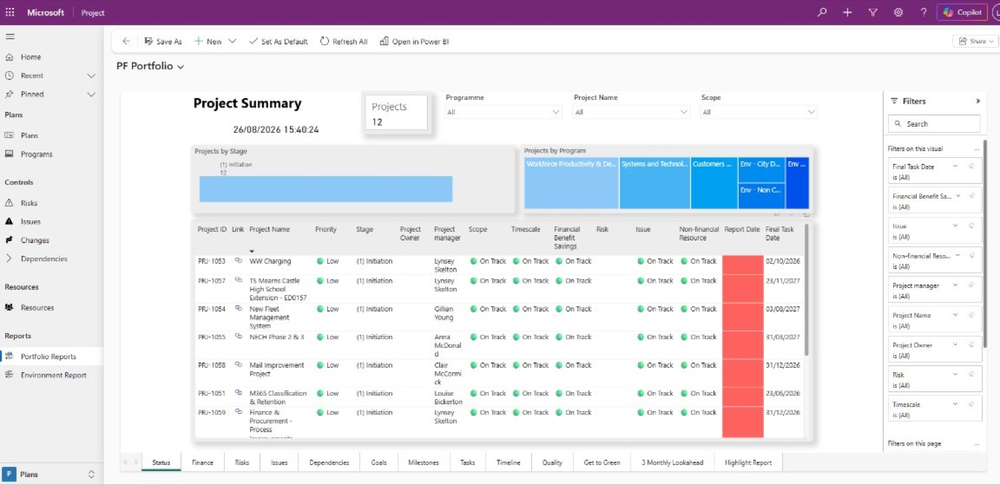

Run the project
Status & reporting
The Status tab is where you report to your boards. What you write there becomes the main source of project information for governance meetings and programme oversight — it feeds your one-page Highlight Report and the Power BI dashboards.
Where your update goes
You write it once. Project Hub carries it all the way to the board.
Status update
- Six health ratings
- Get to Green (if needed)
- Resources
- 3-month look-ahead
Latest position
- Current health ratings
- Date of your latest report
- All previous reports
Highlight Report
- One page per project
- Pulls in milestones, risks, issues and financials too
Power BI dashboards
- Programme report
- Project report
- Reviewed at Programme & Project Boards
What's different from PWA
PWA
- Flash Reports
- New updates overwrote old ones
- Formatting could come out messy in reports
Project Hub
- Flash Reports gone — replaced by the 3-month look-ahead, recorded in Status
- Every update is kept in your plan and can be looked back at
- Clear formatting in Project Hub and Power BI
- You choose whether it's a Programme or Project Board update
The six health ratings
Each status update rates the project on six criteria. For each one, choose from the dropdown:
The Status tab also shows Latest Status Report — the date your most recent update was submitted.
See the real screen — the health summary on the Status tab

Get to Green
A rule built into the form — you can't save a report that's Off Track without saying how you'll fix it.
It shows up on the Highlight ReportYour latest Get to Green action appears on the project's one-page Highlight Report.
Submit a status update
Open your plan and select the Status tab — it shows your latest submitted report. Then select + New Status Report.
Example ratings. Because Issue Health is Off Track, Get to Green has to be filled in.
- Reporting Date — the date of the Programme Board.
- Submitter — the person creating the report.
- Project Level Update — Programme Board or Project Board. Why it matters
- Health — rate all six criteria. Add a Get to Green action if any are Off Track.
- Resources — any project resource needed for this reporting period.
- Narrative — answer the three look-ahead questions. The look-ahead
- Select Save & Close to submit it.
Looking back or correctingEvery report stays on the Status tab. Double-click an entry to open or edit it.
See the real screen — a completed status report form

The 3-month look-ahead
The three Narrative questions replace the old Flash Report. On the Highlight Report, each answer becomes one of three panels.
What did we expect?
“What was previously expected to be achieved in the reporting period?”
What actually happened?
“What has actually been achieved in the reporting period?”
What's planned?
“What is planned to be achieved in the next reporting period?”
Write it for the boardComparing “expected” against “actually achieved” is what boards look at first. Short bullet points read well on the Highlight Report.
Programme Board or Project Board?
The Project Level Update field decides which dashboard your update appears on. The information you enter is exactly the same either way.
The Highlight Report
Your one-stop view of the project's reporting, on the Status Report tab right next to Status. Ideal for project board discussions.
- Select the Status Report tab.
- The first time, it may ask you to sign in — select Sign in.
- 1RAG status — your six health ratings.
- 2Risk and issue counts — how many are active.
- 3Milestone progress — your critical milestones, with late ones flagged.
- 4Get to Green — from your most recent status update.
- 5Financial updates — from the Financials tab.
- 6Three-month look-ahead — your Narrative answers.
Viewing an older reportSelect a reporting date on the left of the Highlight Report to see an earlier one. Only the Previous, Current and Next Period panels change — everything else always reflects the Status tab as it is now.
See the real screen — the Highlight Report

Power BI dashboards
Just like PWA, what you enter feeds the Power BI reports used to review projects at Project and Programme Boards — and now you can open them inside the app.
A Highlight Report per project
New: every project gets its own one-page report.
A Financials tab
New: financial data from your plan now has its own tab in the report.
Open them in the app
New: no need to go elsewhere — they're linked from the home page.
Open the programme dashboard
- Go to the Project Hub home page.
- Select Programme Reports. You'll land on the programme summary page.
- Move between sections using the tabs at the bottom of the report.
Environment projectsThese have their own programme dashboard, found below Portfolio Reports.
See the real screen — the programme report
